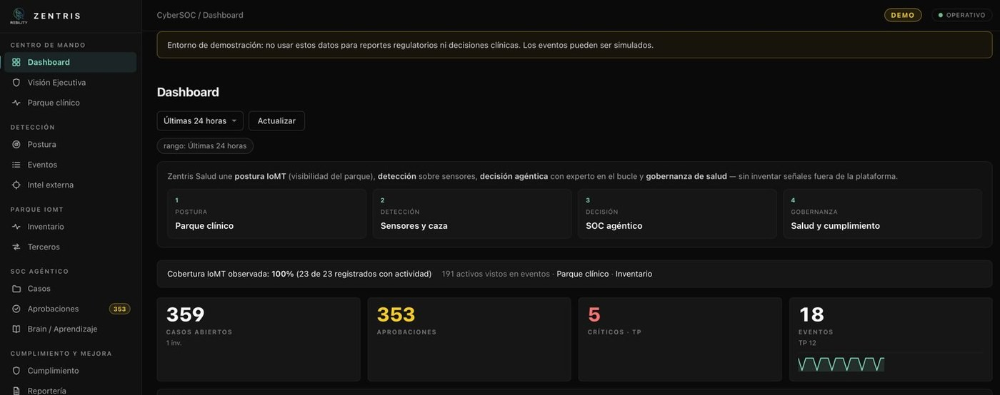
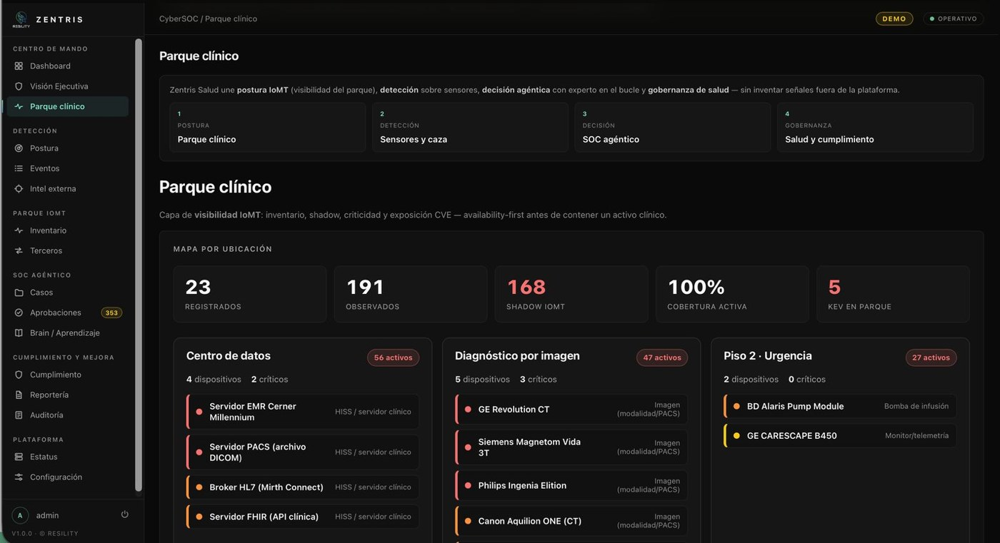
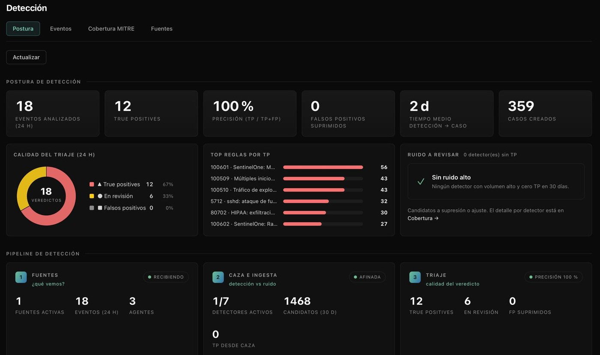
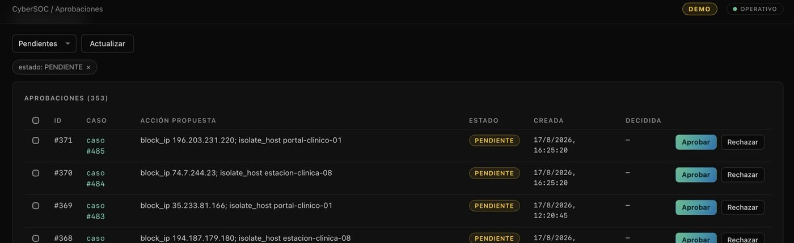
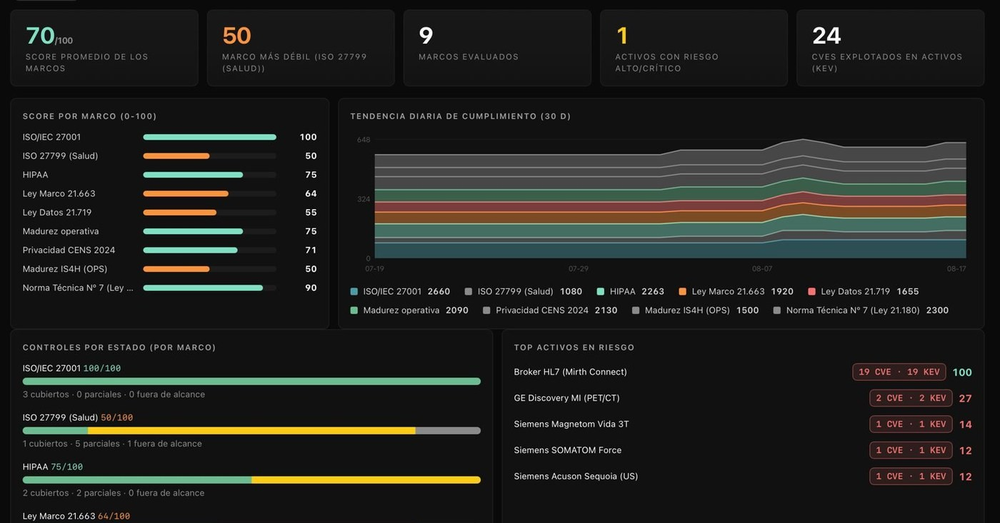
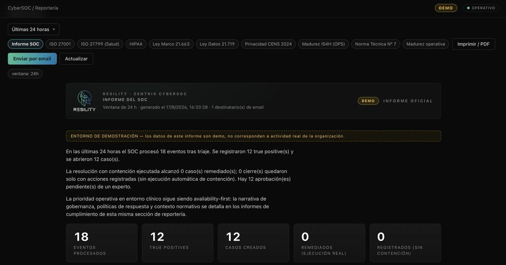
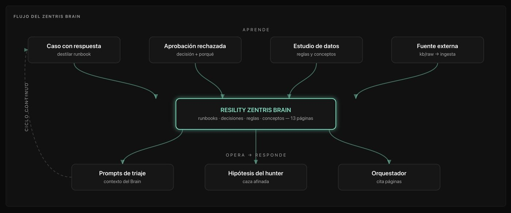

Flota de agentes
En lugar de un modelo monolítico, 20 agentes ligeros especializados recorren el ciclo OODA: normalización, grafo de topología, mapeo MITRE ATT&CK y simulación de explotación.
Una flota de agentes de IA ejecuta el trabajo pesado y repetitivo. La supervisión y la resolución de incidentes críticos la sostiene nuestro equipo de expertos, 24/7.

Cuatro fallas estructurales que no se resuelven contratando más analistas ni comprando otra herramienta.
Un entorno enterprise genera miles de eventos por segundo desde fuentes desincronizadas: SIEM, EDR, cloud e identidad. Nadie los correlaciona a esa velocidad.
Los motores de reglas estáticas generan un volumen de falsas alarmas que satura al equipo. Aislar una amenaza real toma en promedio entre 4 y 12 horas.
Los SOAR tradicionales ejecutan scripts que bloquean IPs de producción o tumban servidores críticos. El resultado es caída de servicio no planificada.
La auditoría externa se entrega en un informe que pierde vigencia con el primer despliegue. Entre una y otra hay meses sin supervisión ofensiva.
Zentris opera como dotación digital sobre la infraestructura que el cliente ya tiene, con un experto que valida en el punto de decisión.
En lugar de un modelo monolítico, 20 agentes ligeros especializados recorren el ciclo OODA: normalización, grafo de topología, mapeo MITRE ATT&CK y simulación de explotación.
Es el punto de control antes de producción. Cuando una remediación supera el umbral de impacto operativo, la IA detiene la ejecución y escala a un ingeniero L3 con todo el contexto ya armado.
Contención vía API sobre las plataformas del cliente: aislamiento de host, bloqueo de red, revocación de credenciales IAM y parcheo sin caída de servicio.
El módulo ofensivo de Zentris ejecuta reconocimiento y validación de explotabilidad de forma permanente sobre el perímetro del cliente. Cada despliegue, cada activo nuevo y cada vulnerabilidad publicada se prueban contra su infraestructura real, en el momento en que aparecen.
La superficie de ataque cambia con cada despliegue. El ciclo de auditoría no.
El inventario declarado casi nunca coincide con lo que realmente está conectado. Zentris levanta el parque completo por observación, marca los activos que nadie registró y prioriza por explotabilidad confirmada, no por severidad teórica.

La máquina resuelve el análisis en milisegundos. La decisión con impacto en producción la firma una persona.
El evento se ingiere desde EDR o cloud y se contextualiza IP, usuario y activo.
Inferencia bayesiana sobre eventos dispersos para identificar la técnica en curso.
Se prueba el impacto de la contención en un entorno aislado antes de tocar nada.
Aislar equipo, revocar token, bloquear IP. Se evalúa el impacto operativo.
El ingeniero L3 revisa la evidencia y autoriza. Recién ahí se ejecuta el comando.
Postura, detección, decisión agéntica y gobernanza en una sola consola operativa.




Cada acción con impacto en producción queda registrada como una aprobación pendiente, con la acción propuesta explícita, el caso asociado y el experto que la resuelve. Nada se ejecuta en silencio.
Se declara el comando exacto: bloquear esta IP, aislar este equipo. No hay caja negra.
Aprobar o rechazar queda asociado a una persona y a una hora concreta.
La cola completa es evidencia para auditoría y para revisión posterior al incidente.
Aprobar, corregir o rechazar una recomendación no es solo resolver un caso: es dejar escrito el criterio operativo.

Los primeros días la plataforma trabaja en modo observación: analiza y propone, pero no ejecuta nada sobre la red.
Los expertos calibran los falsos positivos propios de la operación del cliente antes de habilitar la contención.
El criterio queda en runbooks y reglas reutilizables, no en la cabeza del analista de turno.
La misma telemetría que alimenta la detección alimenta el cumplimiento: score por marco, controles cubiertos, parciales y fuera de alcance, con tendencia en el tiempo y el informe listo para enviar.
Integración de nube a nube por API cuando el cliente ya cuenta con EDR o SIEM; recolector containerizado cuando hay redes híbridas o plataformas antiguas.
| Categoría | Plataformas soportadas |
|---|---|
| EDR / Endpoint | CrowdStrike, SentinelOne, Microsoft Defender, Trend Micro |
| SIEM / Logging | Splunk, QRadar, Microsoft Sentinel, Elastic, Datadog |
| Cloud | AWS, Microsoft Azure, Google Cloud Platform |
| Identidad / IAM | Okta, Microsoft Entra ID, Ping Identity, Active Directory |
| Red y WAF | Palo Alto, Fortinet, Cloudflare, AWS WAF |
| ITSM / Escalación | ServiceNow, Jira Service Management, PagerDuty, Slack, Teams |
Tiempo total de puesta en marcha estándar enterprise, con cifrado mutuo de extremo a extremo.
Tenant aislado y generación de llaves de cifrado y credenciales de acceso.
Conectores por API con permisos de lectura, y permisos de ejecución acotados para la remediación.
Definición de dominios, rangos públicos y cuentas cloud, más el permiso perimetral para las sondas.
Primera semana sin ejecutar: se calibran los falsos positivos propios antes de habilitar la contención.
Una sesión técnica de 30 minutos basta para definir el alcance del piloto sobre su propia infraestructura.